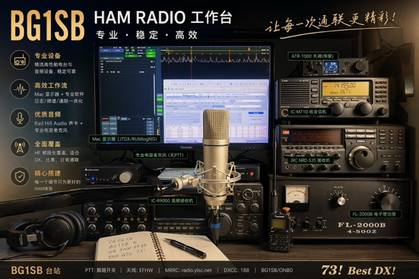
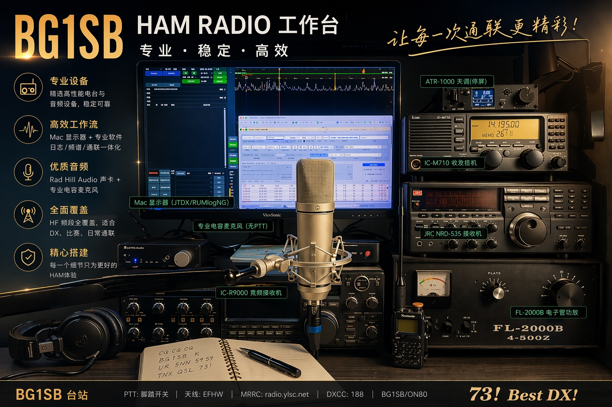
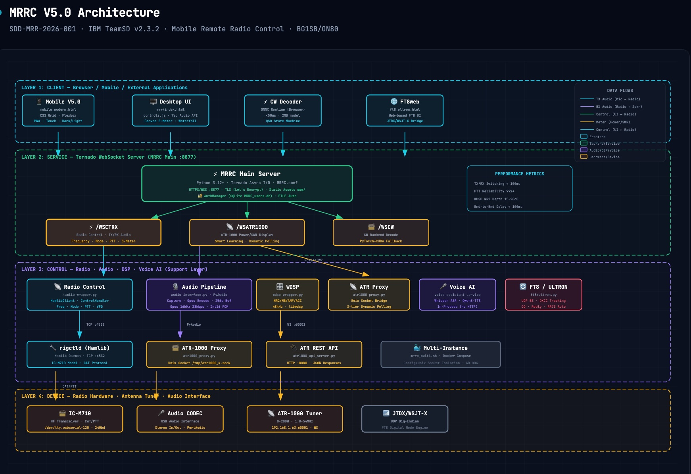

Mobile First
Touch-optimized glassmorphism UI, PWA add-to-home-screen, haptic feedback, safe-area adaptation for all modern phones.
MRRC - Modern Web-based remote transceiver control system. Control your HF radio from phone, tablet, or computer. Opus-optimized audio streaming, WDSP professional noise reduction, AI voice assistant, CW/FT8 digital modes, studio-grade TX audio processing, and 3-layer PTT safety system.


MRRC V5.6.5 System Architecture — 4-Layer Design

Touch-optimized glassmorphism UI, PWA add-to-home-screen, haptic feedback, safe-area adaptation for all modern phones.
TX ~65ms / RX ~51ms, <100ms TX↔RX switch. Opus codec 28kbps, AudioWorklet playback, Int16 transport — professional real-time experience.
OpenHPSDR WDSP library: NR2 spectral noise reduction 15-20dB, AGC (4 modes), ANF auto-notch, NB noise blanker — SSB-optimized.
Whisper ASR + Qwen3-TTS: speech-to-text receive, text-to-speech transmit with automatic phonetic alphabet callsign conversion.
Browser-first AI: <2MB ONNX model, <50ms inference, QSO state machine auto-detects callsign/RST/QTH with smart reply suggestions.
0-200W real-time power display, SWR 1.0-9.99, smart frequency→tuner learning with ±10kHz recall, JSON persistence.
3-layer TX protection: release ACK protocol with 3x retry + redundant audio-path fallback, 120s TOT hard limit, touch-move auto-release, visibility-change forced stop — prevents stuck transmissions.
JTDX/WSJT-X/MSHV integration with full remote UI: live waterfall spectrogram, 6 customizable TX message slots, server-side QSO auto-sequencer, DXCC entity/new-grid tracking, desktop notifications, and CQ-only filtering.
Web Audio API TX chain: low-cut 150Hz, mid-cut -2dB@500Hz, presence +3dB@2.4kHz, high-cut 3kHz, 3:1 compressor, -50dB noise gate.
A research methodology distilled from MRRC: IT veteran judgment awakened by vibe coding, structured by FDE, SDD, harness, and agentic engineering.
Set up a complete remote radio control system in 5 minutes